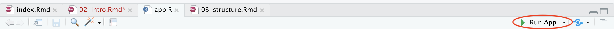

Chapter 2 Introduction
2.1 What is Shiny
Shiny is an R package that makes it easy to build interactive web applications. It provides an easy way to present R data analysis interactively and over the web. It is magical in the sense that it allows you to create complicated apps without any prior knowledge of HTML, CSS or JavaScript straight from your R code. Shiny essential wraps your R code and transforms it into a dynamic web app. The powerful features of the shiny programming are the User Interface (UI) and the reactivity which will be discussed in later sections.
To use it, simply open up R Studio and:
2.2 Another R package - What’s so special about Shiny?
It’s easier than learning HTML, CSS and JavaScript, although you can use those to build your own custom Shiny elements
You don’t need to port any of your R code into another language in order to build a web app
Incredible flexibility, you can generate dynamic UI elements and create interactive plots
It adds reproducibilty to your graphs
You don’t need to generate a billion plots manually. It can easily be added to a markdown document - like this one!
2.3 Example apps
Here are some apps made by Monash bioinformaticians:
Stuart’s TCP app that went into his Nature paper: Stuart K. Archer, Nikolay E. Shirokikh, Traude H. Beilharz, & Thomas Preiss. (2016). Dynamics of ribosome scanning and recycling revealed by translation complex profiling. Nature, 2016.
2.4 Create your first Shiny App
Activity 1: Creating a ShinyApp that prints “Hello, World!”
Create a new .R file, paste the following code inside, save it as app.R.
library(shiny) #1. calls the library `shiny`
ui <- fluidPage( #2. defines user interface, an HTML webpage
"Hello, world!" # prints Hello, world! on webpage
)
server <- function(input, output, session) { #3. specifies app behavior
}
app_hello <- shinyApp(ui, server) # 4. starts Shiny applicationClick on Run App in the top right corner (see fig below). Or you can also use the keyboard shortcut: Cmd/Ctrl + Shift + Enter.

2.4.1 Breakdown of the code
This is a trivial Shiny app that performs 4 tasks:
Calls the
shinypackage.Defines user interface (ui) which in this case is an HTML webpage, for us to interact with. In this user interface, it prints “Hello, world!”.
Creates a function called server that specifies app behavior. Currently, the function body is empty. It means this function (and the app) doesn’t do anything except for printing “Hello, world!” We will later add more controls to this function to control app behavior.
Construct a Shiny application from UI and server and stores it in a variable called
app_hello.
In the R console, there is some text displayed in red which indicates the URL of your app. Your app can be found at 127.0.0.1, indicates “this computer” and 5537 is a randomly assigned port number.
2.4.2 Running a Shiny App
Aside from the Run App button and the shortcut, there are many other ways to run a shiny app:
Activity 2: Now, open the app_ui.R inside ShinyApps folder and examine what it does.
First run the app as it is. Then uncomment the lines and run again and observer the changes. Can you explain the function of this app?